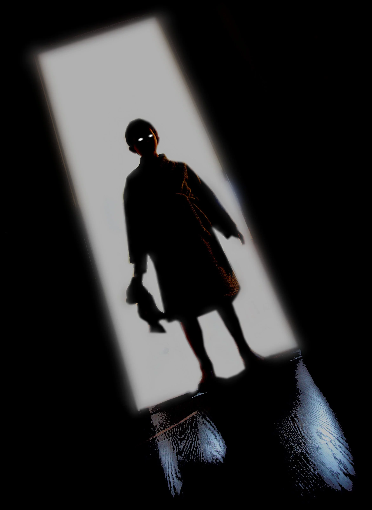

micro historias de terror
 Microrrelatos que te dejarán si poder pegar un ojo en la noche...
*Aclaración: Algunos microrrelatos son mios y otros son de internet, si alguno de esos es tuyo contactame para darte tus respectivos creditos.*
mi ataud
Estaba durmiendo cuando unos martillazos me despertaron.
Solo pude escuchar el sonido de la tierra cayendo en mi ataúd apagando mis gritos
Accidente
La policía me llamó a las 22:00 para comunicarme que mi hermano había muerto en un accidente. A las 22:15, mi hermano llamó por telefono
llamada
Todas las noches alguien amenaza por teléfono a mi tía. La policía rastreó las llamadas. Venían de su propia casa. Vive sola
decoracion
Hace tres años, mi vecino me pidió que le diese mi visto bueno a su decoración de halloween. Eran los cuerpos de sus hijos desmembrados.
El niño
A medianoche, vi a un niño con un cuchillo en mi habitación. Encendí la luz asustado y desapareció. Me susurró al oído que seguía aquí

Debajo de la cama
Mientras lo arropaba y le daba buenas noches, mi hijo me dijo suplicando, “Papi, mira bajo la cama por si hay monstruos”. Decidí complacerlo, pero bajo la cama solo encontré a mi hijo que temblando me susurraba, “Papi, hay algo en mi cama”
12:07
Lo último que vi fue mi reloj marcando las 12:07 de la madrugada, mientras algo me apuñalaba con sus largas uñas podridas, y utilizaba su otra mano para acallar mis gritos. Me desperté de golpe, aliviado al comprobar que todo era un sueño. El reloj marcaba las 12:06, cuando la puerta de mi armario comenzó a abrirse.
El sótano
Una niña escuchó que su madre la llamaba desde el sótano, y se dispuso a bajar para ver que quería. Llegando a las escaleras, su madre tiró de ella mientras le dijo, “Llama a la policía, yo también lo he escuchado”
MONITOR DEL BEBE
Me despertó el ruido del monitor del bebé. Mi único hijo lloraba mientras una voz femenina le cantaba para calmarlo. Estiré mi brazo para coger el aparato y escuchar mejor, cuando rocé el cuerpo de mi esposa, durmiendo a mi lado
Titulo de la pagina
Después de luchar desesperadamente para dar indicios de vida y alertar a los médicos de que estaba con vida, una enfermera vio el brillo en mis ojos Pensé que estaba salvado, pero sonrió maliciosamente mientras decía: “Todo listo para la extracción de órganos doctor. Proceda con la primera incisión…”
La habitación
No concilié el sueño facilmente, los retratos de aquella habitación de hotel parecían mirarme muy fijamente. Cuando desperté al día siguiente vi con horror, que la habitación no tenía cuadros, solo ventanas.